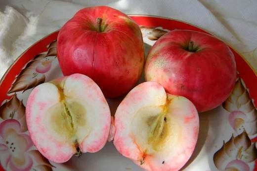
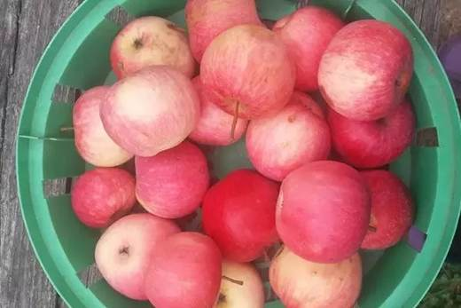
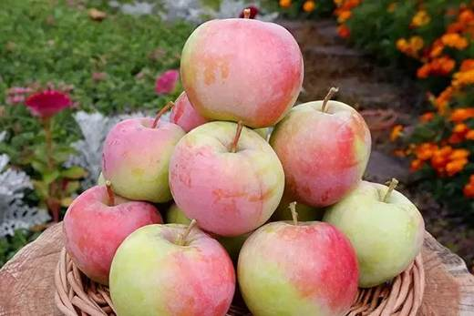
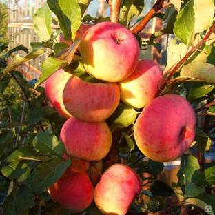

«Услада» полностью оправдывает имя: сладкие яблоки с розовой мякотью и малиновым ароматом, богатые пектином — сорт рекомендуют для детского и диетического питания.




Клик по фото — полный размер. Фотографии иллюстрируют сорт/вид; собраны из открытых источников (питомники, сортовые каталоги, Википедия).
Услада — сорт селекции С.И. Исаева (МГУ), полученный от посева семян Антоновки красномякотной. Плоды округлые, зеленовато-жёлтые с ярким красно-полосатым румянцем на большей части. Мякоть белая, под кожицей розоватая с розовыми прожилками, мелкозернистая, сочная, кисловато-сладкая с лёгким малиновым ароматом.
Плоды содержат много витаминов и пектина — сорт официально рекомендуется для детского и диетического питания. Дерево среднерослое, с округлой густой кроной, прекрасно зимует в средней полосе, слабо поражается паршой.
| Зимостойкость | высокая |
| Устойчивость к парше | слабое поражение даже во влажные годы |
| Самоплодность | самобесплодна — нужны опылители |
| Лёжкость | сентябрь–октябрь (до 1,5 мес в прохладе) |
| Назначение | десертное; отличное варенье и пастила |
Советы собраны из отзывов садоводов на форумах и из практики питомников; цитаты приведены по источникам ниже.